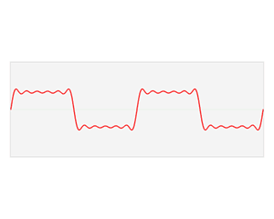

一 图卷积神经网络的由来
传统卷积神经网络对象是具有Euclidean domains data数据，该数据最显著的特征是具有规则的空间结构 ，如图片是规则的正方形，语音是规则的一维序列等，这些特征都可以用一维或二维的矩阵来表示，卷积神经网络处理起来比较高效。
CNN的【平移不变性】在【非矩阵结构】数据上不适用
平移不变性（translation invariance）：比较好理解，在用基础的分类结构比如ResNet、Inception给一只猫分类时，无论猫怎么扭曲、平移，最终识别出来的都是猫，输入怎么变形输出都不变这就是平移不变性，网络的层次越深这个特性会越明显。
平移可变性（translation variance）：针对目标检测的，比如一只猫从图片左侧移到了右侧，检测出的猫的坐标会发生变化就称为平移可变性。当卷积网络变深后最后一层卷积输出的feature map变小，物体在输入上的小偏移，经过N多层pooling后在最后的小feature map上会感知不到，这就是为什么R-FCN原文会说网络变深平移可变性变差。
离散卷积本质就是一种加权求和。CNN中的卷积就是一种离散卷积，本质上就是利用一个共享参数的过滤器（kernel），通过计算中心像素点以及相邻像素点的加权和来构成feature map实现空间特征的提取，当然加权系数就是卷积核的权重系数(W)。
那么卷积核的系数如何确定的呢？是随机化初值，然后根据误差函数通过反向传播梯度下降进行迭代优化。这是一个关键点，卷积核的参数通过优化求出才能实现特征提取的作用，GCN的理论很大一部分工作就是为了引入可以优化的卷积参数。
生活中很多数据不具备规则的空间结构，称为Non Euclidean data，如，推荐系统、电子交易、分子结构等抽象出来的图谱。这些图谱中的每个节点连接不尽相同，有的节点有三个连接，有的节点只有一个连接，是不规则的结构。对于这些不规则的数据对象，普通卷积网络的效果不尽人意。CNN卷积操作配合pooling等在结构规则的图像等数据上效果显著，但是如果作者考虑非欧氏空间比如图（即graph，流形也是典型的非欧结构，这里作者只考虑图），就难以选取固定的卷积核来适应整个图的不规则性，如邻居节点数量的不确定和节点顺序的不确定。
例如，社交网络非常适合用图数据来表达，如社交网络中节点以及节点与节点之间的关系，用户A（有ID信息等）、用户B、帖子都是节点，用户与用户之间的关系是关注，用户与帖子之间的关系可能是发布或者转发。通过这样一个图谱，可以分析用户对什么人、什么事感兴趣，进一步实现推荐机制。
总结一下，图数据中的空间特征具有以下特点：
1） 节点特征：每个节点有自己的特征；（体现在点上）
2） 结构特征：图数据中的每个节点具有结构特征，即节点与节点存在一定的联系。（体现在边上）
总地来说，图数据既要考虑节点信息，也要考虑结构信息，图卷积神经网络就可以自动化地既学习节点特征，又能学习节点与节点之间的关联信息。
综上所述，GCN是要为除CV、NLP之外的任务提供一种处理、研究的模型。
图卷积的核心思想是利用『边的信息』对『节点信息』进行『聚合』从而生成新的『节点表示』。
二 图卷积两种形式
GCN的本质目的就是用来提取拓扑图的空间特征。 而图卷积神经网络主要有两类，一类是基于空间域或顶点域vertex domain（spatial domain）的，另一类则是基于频域或谱域spectral domain的。通俗点解释，空域可以类比到直接在图片的像素点上进行卷积，而频域可以类比到对图片进行傅里叶变换后，再进行卷积。
2.1 vertex domain（spatial domain）：顶点域（空间域）
基于空域卷积的方法直接将卷积操作定义在每个结点的连接关系上，它跟传统的卷积神经网络中的卷积更相似一些。在这个类别中比较有代表性的方法有 Message Passing Neural Networks(MPNN)[1], GraphSage[2], Diffusion Convolution Neural Networks(DCNN)[3], PATCHY-SAN[4]等。
2.2 spectral domain：频域方法（谱方法）
这就是谱域图卷积网络的理论基础了。这种思路就是希望借助图谱的理论来实现拓扑图上的卷积操作。从整个研究的时间进程来看：首先研究GSP（graph signal processing）的学者定义了graph上的Fourier Transformation，进而定义了graph上的convolution，最后与深度学习结合提出了Graph Convolutional Network。
基于频域卷积的方法则从图信号处理起家，包括 Spectral CNN[5], Cheybyshev Spectral CNN(ChebNet)[6], 和 First order of ChebNet(1stChebNet)[7] 等
论文Semi-Supervised Classification with Graph Convolutional Networks就是一阶邻居的ChebNet。
Q1 什么是Spectral graph theory？
Spectral graph theory请参考维基百科的介绍，简单的概括就是借助于图的拉普拉斯矩阵的特征值和特征向量来研究图的性质
Q2 GCN为什么要利用Spectral graph theory？
这是论文（Semi-Supervised Classification with Graph Convolutional Networks）中的重点和难点，要理解这个问题需要大量的数学定义及推导
过程：
（1）定义graph上的Fourier Transformation傅里叶变换（利用Spectral graph theory，借助图的拉普拉斯矩阵的特征值和特征向量研究图的性质）
（2）定义graph上的convolution卷积
三 拉普拉斯矩阵
拉普拉斯矩阵（Laplacian matrix)）也叫做导纳矩阵、基尔霍夫矩阵或离散拉普拉斯算子，主要应用在图论中，作为一个图的矩阵表示。对于图 $G=(V,E)$ ，其Laplacian 矩阵的定义为 $L=D-A$ ，其中$L$ 是Laplacian 矩阵， $D=diag(d)$是顶点的度矩阵（对角矩阵）,$d=rowSum(A)$，对角线上元素依次为各个顶点的度， $A $是图的邻接矩阵。
度矩阵，节点的连边条数，对角阵，有向图可以分入度和出度
邻接矩阵，节点的连接关系
Graph Fourier Transformation及Graph Convolution的定义都用到图的拉普拉斯矩阵。
频域卷积的前提条件是图必须是无向图，只考虑无向图，那么$L$就是对称矩阵。
3.1 常用的拉普拉斯矩阵
普通形式的拉普拉斯矩阵
$$
L=D-A
$$
$L$中的元素给定为：
$$
L_{i,j}=
\begin{cases}
diag(v_i)\quad i=j \
-1 \quad i\neq j \;and \;v_i\;is\;adjacent\;to\;v_j\
0\quad otherwise
\end{cases}
$$
其中$diag(vi)$ 表示顶点 $i$ 的度。
对称归一化的拉普拉斯矩阵
$$
L^{sys}=D^{-1/2}LD^{-1/2}=I-D^{-1/2}AD^{-1/2}
$$
矩阵元素定义为：
$$
L^{sys}_{i,j}=
\begin{cases}
1\quad i=j\;and\;diag(v_i)\neq 0\
-\frac{1}{ \sqrt { diag(v_i)diag(v_j) } } \quad i\neq j \;and \;v_i\;is\;adjacent\;to\;v_j\
0\quad otherwise
\end{cases}
$$
很多GCN论文应用的是这种拉普拉斯矩阵
随机游走归一化拉普拉斯矩阵（Random walk normalized Laplacian）
$$
L^{rw}=D^{-1}L=I-D^{-1}A
$$
矩阵元素定义为：
$$
L^{sys}_{i,j}=
\begin{cases}
1\quad i=j\;and\;diag(v_i)\neq 0\
-\frac{1}{diag(v_i)} \quad i\neq j \;and \;v_i\;is\;adjacent\;to\;v_j\
0\quad otherwise
\end{cases}
$$
泛化的拉普拉斯 (Generalized Laplacian)
定义为（用的少）：
$$
\begin{cases}
Q_{i,j}<0\quad i=j\;and\;diag(v_i)\neq 0\
Q_{i,j}=0 \quad i\neq j \;and \;v_i\;is\;adjacent\;to\;v_j\
anynumber\quad otherwise
\end{cases}
$$
一个拉普拉斯矩阵计算例子：

可以看出，标准归一化的拉普拉斯矩阵还是对称的，并且符合前面的公式定义。
Graph Convolution与Diffusion相似之处，当然从Random walk normalized Laplacian就能看出了两者确有相似之处（其实两者只差一个相似矩阵的变换，可参考Diffusion-Convolutional Neural Networks)
其实维基本科对Laplacian matrix的定义上写得很清楚，国内的一些介绍中只有第一种定义。这让我在最初看文献的过程中感到一些的困惑，特意写下来，帮助大家避免再遇到类似的问题。
3.2 无向图拉普拉斯矩阵性质
（1）拉普拉斯矩阵是半正定矩阵。（最小特征值大于等于0）
（2）特征值中0出现的次数就是图连通区域的个数。
（3）最小特征值是0，因为拉普拉斯矩阵（普通形式：$L=D−A$）每一行的和均为0，并且最小特征值对应的特征向量是每个值全为1的向量；
（4）最小非零特征值是图的代数连通度。
证明拉普拉斯矩阵半正定：
所以，对于任意一个属于实向量 $f \in \mathbb{R}^m $ （$f为m∗1$的实数列向量 ），都有此公式成立：
$$
f_TLf= ∑^m_{i,j=1}a_ {ij}(f_i −f_j)^2
$$
3.3 为什么GCN要用拉普拉斯矩阵？
拉普拉斯矩阵是对称矩阵，可以进行特征分解（谱分解）
由于卷积在傅里叶域的计算相对简单，为了在graph上做傅里叶变换，需要找到graph的连续的正交基对应于傅里叶变换的基，因此要使用拉普拉斯矩阵的特征向量。
3.4. 拉普拉斯矩阵的谱分解（特征分解）
GCN的核心基于拉普拉斯矩阵的谱分解，文献中对于这部分内容没有讲解太多，初学者可能会遇到不少误区，所以先了解一下特征分解。
特征分解（Eigendecomposition），又称谱分解（Spectral decomposition）是将矩阵分解为由其特征值和特征向量表示的矩阵之积的方法。只有对可对角化矩阵或有n个线性无关的特征向量的矩阵才可以施以特征分解。
不是所有的矩阵都可以特征分解，其充要条件为n阶方阵存在n个线性无关的特征向量。
但是拉普拉斯矩阵是半正定矩阵（半正定矩阵本身就是对称矩阵），有如下三个性质：
对称矩阵一定n个线性无关的特征向量
半正定矩阵的特征值一定非负
对阵矩阵的不同特征值对应的特征向量相互正交，这些正交的特征向量构成的矩阵为正交矩阵。
由上拉普拉斯矩阵对称知一定可以谱分解，且分解后有特殊的形式。
对于拉普拉斯矩阵其谱分解为：
$$
L=U \Lambda U^{-1}=U\left[ \begin{matrix} \lambda_1 & & \\ & \ddots & \\ & & \lambda_n \\ \end{matrix} \right] U^{-1}
$$
其中$U=(\vec{u_1},\vec{u_2},\cdots,\vec{u_n}) $是列向量为单位特征向量的矩阵，也就说 $ \vec{u_l} $是列向量，$Λ$是$n$个特征值构成的对角阵。
由于 $U$ 是正交矩阵，即$UU_T=E$，所以特征分解又可以写成：
$$
L=U \Lambda U^{-1}=U \Lambda U^{T}
$$
注意，特征分解最右边的是特征矩阵的逆，只是拉普拉斯矩阵是对称矩阵才可以写成特征矩阵的转置。
3.5 拉普拉斯算子
定义：拉普拉斯算子是n维欧几里德空间中的一个二阶微分算子，定义为梯度$（∇f）$
的散度$（ \nabla \cdot f，即\nabla f \cdot f）$。因此如果$f$是二阶可微的实函数，则f的拉普拉斯算子$∆$定义为：
$$
∆f=\nabla^2 f=\nabla \cdot \nabla f
$$
$f$的拉普拉斯算子也是笛卡尔坐标系$x_i$中的所有非混合二阶偏导数：
$$
∆f=\sum_{i=1}^n \frac{\partial^2f}{\partial x_i^2}
$$
函数$f$的拉普拉斯算子也是该函数的海塞矩阵（是一个多元函数的二阶偏导数构成的方阵）的迹：
$$
∆f=tr(H(f))
$$
拉普拉斯算子（Laplacian operator）的物理意义是空间二阶导，准确定义是：标量梯度场中的散度，一般可用于描述物理量的流入流出。比如说在二维空间中的温度传播规律，一般可以用拉普拉斯算子来描述。
拉普拉斯矩阵也叫做离散的拉普拉斯算子。
拉普拉斯算子在三维空间：
四 卷积
4.1 连续形式的一维卷积
在泛函分析中，卷积是通过两个函数f(x)和g(x)生成第三个函数的一种算子，它代表的意义是：两个函数中的一个(取g(x)，可以任意取)函数，把g(x)经过翻转平移,然后与f(x)的相乘，得到的一个新的函数，对这个函数积分，也就是对这个新的函数求它所围成的曲边梯形的面积
设$f(t),g(t)$是两个可积函数，$f(t)与g(t)$的卷积记为$f(t)*g(t)$
$$
f(t)∗g(t)=∫^{−∞}_{+∞}f(τ)g(t−τ)dτ=∫^{−∞}_{+∞}f(t−τ)g(τ)dτ
$$
4.2 离散形式的一维卷积
对于定义在整数$Z$上的函数$f,g$,卷积定义为
$$
(f∗g)(t)=∑_{τ=−∞}^∞f(τ)g(t−τ)
$$
4.3 实例:掷骰子问题
光看数学定义可能会觉得非常抽象，下面举一个掷骰子的问题，该实例参考了知乎问题”如何通俗易懂地解释卷积”的回答。
想象现在有两个骰子，两个骰子分别是$f$跟$g$，$f(1)$表示骰子$f$向上一面为数字1的概率。同时抛掷这两个骰子1次，它们正面朝上数字和为4的概率是多少呢？相信读者很快就能想出它包含了三种情况，分别是：
f向上为1，g向上为3；
f向上为2，g向上为2；
f向上为3，g向上为1；
最后这三种情况出现的概率和即问题的答案，如果写成公式，就是$∑_{τ=1}^3f(τ)g(4−τ)$。可以形象地绘制成下图：
如果稍微扩展一点，比如说认为 $f(0) $或者$ g(0)$等是可以取到的，只是它们的值为$0$而已。那么该公式可以写成$ ∑_{τ=−∞}^∞f(τ)g(4−τ)$。
[f(−∞),⋯,f(1),⋯,f(∞)]⋅[g(∞),⋯,g(3),⋯,g(−∞)]
仔细观察，这其实就是卷积$(f∗g)(4)$。如果将它写成内积的形式，卷积其实就是
$$
[f(−∞),⋯,f(1),⋯,f(∞)]⋅[g(∞),⋯,g(3),⋯,g(−∞)]
$$
这么一看，是不是就对卷积的名字理解更深刻了呢?所谓卷积，其实就是把一个函数卷(翻)过来，然后与另一个函数求内积。
对应到不同方面，卷积可以有不同的解释：$g$ 既可以看作我们在深度学习里常说的核(Kernel)，也可以对应到信号处理中的滤波器(Filter)。而$ f $可以是我们所说的机器学习中的特征(Feature)，也可以是信号处理中的信号(Signal)。$f$和$g$的卷积$ (f∗g)$就可以看作是对$f$的加权求和。下面两个动图就分别对应信号处理与深度学习中卷积操作的过程：


五 傅里叶变换
5.1 连续形式的傅立叶变换
关于傅立叶变换相关的详细而有趣的内容，可以看这几篇文章：
如何理解傅立叶级数公式？ （强烈推荐看一看）
从傅立叶级数到傅立叶变换 （强烈推荐看一看）
-
下面是一个大致流程：
任意函数可以分解为奇偶函数之和:
$$
f(x)=2f(x)+f(−x)+2f(x)−f(−x)=feven+fodd
$$
任意一个周期函数可以由若干个正交函数（由$sin,cos$ 构成）的线性组合构成，写出傅里叶级数的形式如下：
$$
f(x)=a_0+∑^∞_{n=1}(a_ncos(\frac{2πn}{T}x)+b_nsin(\frac{2πn}{T}x)),a0∈R
$$
利用欧拉公式 $e^{ix}=cos\,x+i\,sin\,x$ （这里的指复数中的$i$），$cosx,sinx$可表示成 :
$$
cosx=\frac{e^{ix}+e^{−ix}}{2},sinx=\frac{e^{ix}-e^{−ix}}{2i}
$$
在时间$t$轴上，把$e^{it}$向量的虚部（也就是纵坐标）记录下来，得到的就是$sin(t)$：
在时间$t$轴上，把$e^{i2t}$向量的虚部记录下来，得到的就是$sin(2t)$：
如果在时间$t$轴上，把$e^{it}$的实部（横坐标）记录下来，得到的就是$cos(t)$的曲线：
更一般的,具有两种看待$sin,cos$的角度：
$$
e^{iωt}⟺
\begin{cases}
sin(wt)\
cos(wt)
\end{cases}
$$
这两种角度，一个可以观察到旋转的频率，所以称为频域；一个可以看到流逝的时间，所以称为时域：
所以，任意周期函数可以以$e^{iωt}$为基函数用傅里叶级数的指数形式表示。即，对于一个周期函数$f(x)$以傅里叶级数的指数形式表示为：
$$
f(x)=∑^∞_{n=−∞}\underbrace{cn}_{基的坐标}⋅\underbrace{ e^{ i\frac{2πnx}{T} } }_{正交基}
$$
但是对于非周期函数，并不能用傅里叶级数的形式表示。但是还是用某个周期函数$f_T(x)$当$T→∞$来逼近，即$lim_T→∞f_T(x)=f(x)$，用积分的形式可以表示为：
$$
f(x)=∫_{−∞}^∞[∫_{−∞}^{+∞}f(x)e^{−iωx}dx] e^{iωx}dω=∫_{−∞}^∞F(ω) e^{iωx}dω
$$
其中，$F(ω)$就是$f(x)$的连续形式的傅里叶变换：
$$
F(ω)=F[f(x)]=∫_{−∞}^{+∞}f(x)e^{−iωx}dx
$$
可以看出，$f(x)$和$F(ω)$可以通过指定的积分运算相互表达。
当然，也可以利用欧拉公式通过cos和sin函数表示为F(u)：
$$
F(u)=∫_{−∞}^{+∞}f(x)[cos(2πxu)−isin(2πxu)]dx
$$
所以，对函数f(x)的傅里叶变换F和傅里叶的逆变换F−1记作：
$$
F(ω)=F[f(x)],f(x)=F−1[F(ω)]
$$
$F(ω)$叫做$f(x)$*象函数或傅里叶变换 ，即通过傅里叶变换后关于频率的函数，函数图像就是频谱图，ω 就是$f$对应在频域中的频率
$f(x)$叫做$F(ω) $的原象函数
其实可以发现这个$f(x)$的傅立叶变换$F(ω)$形式上是$f(x)$与基函数$e^{−iωx}$的积分，本质上将函数$f(x)$映射到了以$e^{−iωx}$为基向量的空间中。
5.2 频域（frequency domain）和时域（time domain）的理解
时域：真实量到的信号的时间轴，代表真实世界。
频域：为了做信号分析用的一种数学手段。
要理解时域和频域只需要看下面两张动图就可以了：


频谱图里的竖线分别代表了不同频率的正弦波函数，也就是之前的基，而高度则代表在这个频率上的振幅，也就是这个基上的坐标分量。
很多在时域看似不可能做到的数学操作，在频域相反很容易。这就是需要傅里叶变换的地方。尤其是从某条曲线中去除一些特定的频率成分，这在工程上称为滤波，是信号处理最重要的概念之一，只有在频域才能轻松的做到。
看一个傅里叶变换去噪的例子：
在傅里叶变换前，图像上有一些规律的条纹，直接在原图上去掉条纹有点困难，但我们可以将图片通过傅里叶变换变到频谱图中，频谱图中那些规律的点就是原图中的背景条纹。
只要在频谱图中擦除这些点，就可以将背景条纹去掉。
5.3 周期性离散傅里叶变换（Discrete Fourier Transform, DFT）
傅里叶变换有连续时间非周期傅里叶变换，连续时间周期性傅里叶变换，离散时间非周期傅里叶变换和离散时间周期性傅里叶变换，鉴于计算机主要处理离散周期性信号，本文主要介绍周期性离散时间傅里叶变换（DFT）。信号
$x_n$的傅里叶变换$X_k$为:
$$
X_k=∑^{N−1}_{n=0}x_ne^{ −i\frac{2π}{N} kn }
$$
信号$x_n$用其傅里叶变换$X_k$表示为：
$$
x_n=∑^{N−1}_{n=0}X_ke^{i\frac{2π}{N}kn}
$$
其中
- N表示傅里叶变换的点数
- k表示傅里叶变换的第k个频谱
六 Graph上的傅里叶变换及卷积
把传统的傅里叶变换以及卷积迁移到Graph上来，核心工作其实就是把拉普拉斯算子的特征函数
$e^{−iωt}$ 变为Graph对应的拉普拉斯矩阵的特征向量。
傅立叶变换与拉普拉斯矩阵的关系：传统傅立叶变换的基，就是拉普拉斯矩阵的一组特征向量。
6.1 图上的傅里叶变换
前面讲到可以用一组正交函数$cos$和$sin$（或$e^{−iωt}$ ）表示任意函数，且傅里叶变换是连续形式的，在处理Graph时，用到的是傅里叶变换的离散形式。由于拉普拉斯矩阵进行谱分解以后，可以得到n个线性无关的特征向量，构成空间中的一组正交基，因此归一化拉普拉斯矩阵算子的特征向量构成了图傅里叶变换的基。图傅里叶变换将输入图的信号投影到了正交空间，相当于把图上定义的任意向量，表示成了拉普拉斯矩阵特征向量的线性组合。
离散积分就是一种内积形式，由此可以定义Graph上的傅里叶变换（实数域）：
$$
F(λ_l)=\hat{f}(λ_l)=∑^N_{i=1}f(i)u_l(i)
$$
$f$是Graph上的N维向量，可以表示某个点的特征向量，f(i) 表示第$i $个特征
$u_l(i) $ 表示第$i $个特征 zhezhe
$f$的Graph 傅里叶变换就是与 $λ_l $ 对应的特征向量$u_l$进行内积运算
$λ$就对应于$ω$(具体解释见第7部分)
$\hat{f}$ 表示$f$的傅里叶变换
6.2 图的傅立叶变换——图的傅立叶变换的矩阵形式
利用矩阵乘法将Graph上的傅里叶变换推广到矩阵形式：
即 f 在Graph上傅里叶逆变换的矩阵形式为：
$$
\hat{f}=U_Tf
$$
6.3 图的傅立叶逆变换——图的傅立叶逆变换的矩阵形式
类似地，传统的傅里叶变换是对频率ω 求积分：
$$
F^{−1}[F(ω)]=\frac{1}{2Π}∫F(ω)e^{iωt}dω
$$
迁移到Graph上变为对特征值$λ_l$求和：
$$
f(i)=∑^N_{l=1}\hat{f}(λ_l)u_l(i)
$$
利用矩阵乘法将Graph上的傅里叶变换推广到矩阵形式：
即$ f $在Graph上傅里叶变换的矩阵形式为：
$$
f=U\hat{f}
$$
6.4 图上的傅里叶变换推广到图卷积
在上面的基础上，利用卷积定理类比来将卷积运算，推广到Graph上。
卷积定理：函数卷积的傅里叶变换是函数傅立叶变换的乘积，即对于函数f与g两者的卷积是其函数傅立叶变换乘积的逆变换（中间的桥梁就是傅立叶变换与反傅立叶变换，证明见：https://zhuanlan.zhihu.com/p/54505069）：
$$
f∗g=F^{−1}{F(f)⋅F(g)}=F^{−1}{f^⋅g^}
$$
所以，对图上$f$和卷积核$g$的卷积可以表示为：
$$
(f∗g)_G=U((U^Tg)\cdot(U^Tf))
$$
从上面可以看出，对卷积核g和f进行傅里叶变换的结果$U^T_g,U^T_f$都是一个列向量：
所以，很多论文中的Graph卷积公式也写作：
$$
(f∗g)_G=U((U^Tg)\odot(U^Tf))
$$
⊙ 表示hadamard product（哈达马积），对于两个向量，就是进行内积运算；对于维度相同的两个矩阵，就是对应元素的乘积运算。如果把$U^T_g$整体看作可学习的卷积核，这里我们把它写作$g_θ$， 最终图上的卷积公式即是：
$$
(f∗g)G=Ug_θU^Tf
$$
有的地方，还把$g_θ=U^Tg$也成对角矩阵的形式，即定义一个滤波$g_θ=diag(U^Tg)$，则：
接下来第8节要介绍的图上频域卷积的工作，都是在$g_θ$的基础上做文章。
七 为什么拉普拉斯矩阵的特征向量可以作为傅里叶变换的基？特征值表示频率？
在Chebyshev论文（M. Defferrard, X. Bresson, and P. Vandergheynst, “Convolutional neural networks on graphs with fast localized spectral filtering,”in Advances in Neural Information Processing Systems, 2016）中就有说明，图上进行傅里叶变换时，拉普拉斯矩阵是对称矩阵，所有有n个线性无关的特征向量，因此可以构成傅里叶变换的一组基，而其对应的特征值就是傅里叶变换的频率。
7.1 为什么拉普拉斯矩阵的特征向量可以作为傅里叶变换的基？
傅里叶变换一个本质理解就是：把任意一个函数表示成了若干个正交函数（由sin,cos 构成）的线性组合。
通过即$ f $在Graph上傅里叶逆变换的矩阵形式：$f=Uf^(b)$也能看出，graph傅里叶变换把graph上定义的任意向量$f$，表示成了拉普拉斯矩阵特征向量的线性组合，即：
$$
f=\hat{f}(1)u_1+\hat{f}(2)u_2+⋯+\hat{f}(n)u_n
$$
那么：为什么graph上任意的向量f都可以表示成这样的线性组合？
原因在于$(\vec{u_1},\vec{u_2},⋯,\vec{u_n}) $ 是graph上 n维空间中的 n 个线性无关的正交向量（拉普拉斯矩阵是对称矩阵，必定可以进行特征分解，有n个线性无关的特征向量），由线性代数的知识可以知道：n 维空间中n 个线性无关的向量可以构成空间的一组基，而且拉普拉斯矩阵的特征向量还是一组正交基。
7.2 怎么理解拉普拉斯矩阵的特征值表示频率？
在graph空间上无法可视化展示“频率”这个概念，那么从特征方程上来抽象理解。
将拉普拉斯矩阵 L 的 n 个非负实特征值，从小到大排列为$λ1≤λ2≤⋯≤λn$， 而且最小的特征值$λ1=0$，因为 n 维的全1向量对应的特征值为0（由 L 的定义就可以得出）：
从特征方程的数学理解来看：
$$
Lu=λu
$$
在由Graph确定的 n 维空间中，越小的特征值 $λ_l$表明：拉普拉斯矩阵 L 其所对应的基$u_l$上的分量、“信息”越少，那么当然就是可以忽略的低频部分了。
其实图像压缩就是这个原理，把像素矩阵特征分解后，把小的特征值（低频部分）全部变成0，PCA降维也是同样的，把协方差矩阵特征分解后，按从大到小取出前K个特征值对应的特征向量作为新的“坐标轴”。
Graph Convolution的理论告一段落了，下面开始Graph Convolution Network
八 深度学习中GCN的演变
Deep learning 中的Graph Convolution直接看上去会和第6节推导出的图卷积公式有很大的不同，但是万变不离其宗，都是根据下式来推导的：
Deep learning 中的Convolution就是要设计含有trainable共享参数的kernel。
上式计算量很大，因为特征向量矩阵U 的复杂度是$O(N^2)$。此外，对于大型图来说，L特征值分解的计算量也很大。
基于上面最原始的卷积公式，深度学习中的GCN主要是从下面几篇文章演变而来的（引用次数都很高），后面一一进行简单介绍：
- 【1】Bruna, Joan, et al. “Spectral networks and locally connected networks on graphs.” 源于ICLR 2014（被引740次）
- 【2】Defferrard, Michaël, Xavier Bresson, and Pierre Vandergheynst. “Convolutional neural networks on graphs with fast localized spectral filtering.” 源于NIPS 2016（被引997次）
- 【3】Hammond, David K., Pierre Vandergheynst, and Rémi Gribonval. “Wavelets on graphs via spectral graph theory.” Applied and Computational Harmonic Analysis 30.2 (2011)（被引874次）
- 【4】Kipf, Thomas N., and Max Welling. “Semi-supervised classification with graph convolutional networks.” 源于ICML 2017 （被引1537次）
8.1 Spectral CNN
谱CNN源于论文（J. Bruna, W. Zaremba, A. Szlam, and Y. LeCun, “Spectral networks and locally connected networks on graphs,” in Proceedings of International Conference on Learning Representations, 2014），Bruna等人，第一次提出谱卷积神经网络。他们简单地把$g_θ $看作是一个可学习参数的集合： $gθ=Θ_{i,j}^k$。并且假设图信号是多维的，图卷积层顶定义为：
第一代的参数方法存在着一些弊端，主要在于：
（1）计算复杂：如果一个样本一个图，那么每个样本都需要进行图的拉普拉斯矩阵的特征分解求U矩阵计算复杂；每一次前向传播，都要计算$U,diag(θ_l) $ 及S$U^T$三者的乘积，特别是对于大规模的graph，计算的代价较高，需要$O(n^2)$的计算复杂度
（2）是非局部性连接的
（3）卷积核需要N个参数，当图中的节点N很大时是不可取的
由于以上的缺点第二代的卷积核设计应运而生。
8.2 Chebyshev谱CNN（ChebNet）
Chebyshev谱CNN源于论文（M. Defferrard, X. Bresson, and P. Vandergheynst, “Convolutional neural networks on graphs with fast localized spectral filtering,”in Advances in Neural Information Processing Systems, 2016）。Defferrard等人提出ChebNet，定义特征向量对角矩阵的切比雪夫多项式为滤波器，也就是
$$
g_θ=g_θ(Λ)≈∑^{K−1}_{i=0}θ_iT_k(\tilde{Λ})
$$
其实，就是利用Chebyshev多项式拟合卷积核的方法，来降低计算复杂度。
推导过程如下：
考虑信号$x∈R^N$（$x$就是graph上对应于每个顶点的feathure vector，即由数据集提取特征构成的向量，而不是和线性代数中常说的特征向量，注意区别）与以参数为 $θ∈R^N$ 的滤波器$g_θ=diag(θ)$在傅里叶域的谱卷积。
$$
g_θ∗x=Ug_θU^Tx \qquad(3)
$$
其中
- U 是对称归一化的拉普拉斯（normalized graph Laplacian）算子$L=I_N−D^{−1/2}AD^{−1/2}=UΛU^T$的特征向量矩阵，Λ是由L的特征值构成的对角矩阵。
由于normalized graph Laplacian矩阵L是实对称矩阵, 因此其特征向量矩阵U是正交矩阵,即UUT=I**N
$U^Tx$是$x$的傅里叶变换。
$g_θ$是由参数$θ$构成的对角矩阵$diag(θ)$。由于参数$θ$的确定与$L$的特征值有关,作者认为$g_θ$是特征值 $Λ$的一个函数，即令
$$
g_θ=g_θ(Λ)
$$
式3的计算量很大，因为特征向量矩阵U 的复杂度是$O(N^2)$。此外，对于大型图来说，L特征值分解的计算量也很大。
为了解决这个问题，Hammond et al.(2011) ：Wavelets on graphs via spectral graph theory指出$g_θ(Λ)$可以很好的通过Chebyshev多项式$T_k(x) $的$Kth$-阶截断展开来拟合，并对$Λ$进行scale使其元素位于$[−1,1]$：
$$
gθ(Λ)≈∑^K_{k=0}θ_kT_K(\tilde{Λ})\qquad(4)
$$
其中
回到对信号x与滤波器$g_θ$的卷积的定义，现在有：
$$
g_θ∗x=∑^K_{k=0}θ_kT_K(\tilde{L})x\qquad(5)
$$
其中
$$
\tilde{L}=2L/λ_{max}−I_N=U\tildeΛU^T
$$
易证
$$
(UΛU^T)^k=UΛ^kU^T
$$
现在，相比于第一种Spectral CNN：
此表达式现在是K-localized，具有局部连接性，因为它是拉普拉斯算子中的Kth-阶多项式，即它仅取决于离中央节点（Kth阶邻域）最大K步的节点
$T_K(\tilde{L})x$的复杂度是O(|E|)，即与边数E呈线性关系，整个运算的复杂度是$O(K∣E∣)，$ 当graph是稀疏图的时候，计算加速尤为明显，这个时候复杂度远低于$O(n^2) $
公式4到公式5的补充证明如下：
（1）先用数学归纳法证明
$$
UT_k(\tildeΛ)U^T=T_k(U\tildeΛU^T)
$$
数学归纳法思路：当n=1时显然成立，假设n=k时成立，只需证n=k+1时成立
证明：
根据切比雪夫多项式的定义, 已知
假设对于任意k>1, 满足
$$
UT_{k−2}(\tildeΛ)U^T=T_{k−2}(U\tildeΛU^T)
$$
与
$$
UT_{k−1}(\tildeΛ)U^T=T_{k−1}(U\tildeΛU^T)
$$
则
因此,根据数学归纳法, 证毕。
(2)已知
$$
\tilde{L}=U\tildeΛU^T
$$
（3）将（1）、（2）两式带入卷积公式：
8.3 CayleyNet
CayleyNet进一步应用了参数有理复合函数的Cayley多项式来捕获窄的频带。CayleyNet的谱图卷积定义为
$$
x∗g_θ=c_0x+2Re \{ ∑^r_{j=1}c_j(hL−iI)^j(hL+iI)^{−j}x \}
$$
其中
- $Re(⋅)$为复数的实部
- $c_0$为实数
- $c_j$为复数
- $i$为虚数
- $h$为控制Cayley滤波器频谱的参数
CayleyNet在保留空间局部性的同时，说明ChebNet可以看作是CayleyNet的一个特例。
8.4 一阶ChebNet（1stChebNet）-GCN
一阶ChebNet源于论文（T. N. Kipf and M.Welling, “Semi-supervised classification with graph convolutional networks,” in Proceedings of the International Conference on Learning Representations, 2017）。这篇论文基于前面的工作，正式成为GCN的开山之作，后面很多变种都是基于这篇文章的。
该篇论文贡献有两点：
作者对于直接操作于图结构数据的网络模型根据频谱图卷积(Hammond等人于2011年提出的Wavelets on graphs via spectral graph theory)使用一阶近似简化计算的方法，提出了一种简单有效的层式传播方法。
作者验证了图结构神经网络模型可用于快速可扩展式的处理图数据中节点半监督分类问题，作者通过在一些公有数据集上验证了自己的方法的效率和准确率能够媲美现有的顶级半监督方法。
下面介绍ChebNet的一阶近似方法：
Kipf等人引入了一种一阶近似ChebNet。假设$K=1$,$λ_{max}=2$ ,则ChebNet卷积公式简化近似为：
$$
x∗g_θ=θ_0x−θ_1D^{−1/2}AD^{−1/2}x
$$
为了抑制参数数量防止过拟合，1stChebNet假设$θ=θ_0=−θ_1 $ ,图卷积的定义就近似为（这是简单的一阶模型）：
$$
g_θ∗x=θ(I_N+D^{−1/2}AD^{−1/2})x
$$
其中
- $I_N+D^{−1/2}AD^{−1/2}$是有范围[0,2]的特征值。因此，如果在深度神经网络模型中使用该算子，则反复应用该算子会导致数值不稳定（发散）和梯度爆炸/消失。
为了解决该问题, 引入了一个renormalization trick：
其中
- $\tilde{A}=A+I_N,\tilde{D}_{ii}=∑_j\tilde{A}_{ij}$，即图中加上自环
再加上一个激活函数，最后就可以得到了论文中的快速卷积公式：
$$
H^{(l+1)}=f(H^l,A)=σ(\tilde{D}^{−1/2}\tilde{A}\tilde{D}^{−1/2}H^{(l)}W^{(l)})
$$
W就是参数$θ$参数矩阵
推广：特征映射公式
可以将这个定义推广到具有C个输入通道（即每个节点的C维特征向量）的信号$X∈R^{N×C}$和 F 个滤波器或特征映射如下：
其中
- $Θ∈R^{C×F} $是一个滤波器参数矩阵，其实就是参数矩阵W
- $Z∈R^{N×F} $ 是一次卷积的输出矩阵。
这个滤波操作复杂度是$O（∣E∣FC）$（其中E为边数，C为特征向量维度，F为卷积核数量），并且$\tilde{A}X$可以有效地实现为密集矩阵和稀疏矩阵的乘积。在源代码中使用了稀疏矩阵和稠密矩阵乘法）
带一阶滤波器的多层图卷积网络（GCN）的结构图如下图所示。